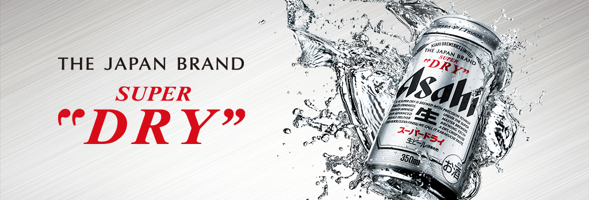

商品情報
- 原材料
-
麦芽（外国製造又は国内製造（５％未満））
ホップ
米
コーン
スターチ
- 成分（100ml当たり）
- アルコール分
- （度数）5%
- 純アルコール量（g）
- 4g
- エネルギー
- 42kcal
- たんぱく質
- 0.2～0.4g
- 脂質
- 0g
- 炭水化物
- 3.0g
- 糖質
- 3.0g
- 食物繊維
- 0～0.2g
- 食塩相当量
- 0～0.02g
- プリン体
- *5～6mg
- 賞味期間
- 9ヶ月
注意
20歳未満の者の飲酒は法律で禁じられています
呑みレポ
ザ・王道のビールです。
世間的にみれもビールの味を想像する時はこのアサヒスーパードライだと思います。
辛口といってもビールの中では比較的に呑みやすく、強炭酸がビール独特のエグ味を緩和させてくれます。
後味に麦の香りが鼻を抜けます。
お酒をこれから呑み始める人にオススメの1缶です。
呑み知識
ビールが生まれたのは紀元前4000年以上前
”ビール”は古い歴史の中では”液体のパン”と呼ばれています。
メソポタミアで人類が農耕生活をはじめた頃、放置してあった麦の粥に酵母が入り込み、自然に発酵したのが起源とされています。
どのスーパーでもコンビニでも売っているので是非買ってみてください
呑みプチレシピ 【シャンディーガフ】
ビールに挑戦してみたけど1缶呑みのもきつい人におすすめのレシピ
※シャンディーガフについては別の機械にお話しします
- 材料
- アサヒスーパードライ
ジンジャーエール
- 作り方
-
分量はお好みで、
よく冷やしたグラスにジンジャエールを注ぎ、静かにビールで満たす。
おつまみチョイス
チョイスできるおつまみの紹介を投稿しましたらリンクを貼ります
- ※投稿でき次第増やしていきます
- ※投稿でき次第増やしていきます
- ※投稿でき次第増やしていきます
- ※投稿でき次第増やしていきます
- ※投稿でき次第増やしていきます
おつまみ一覧